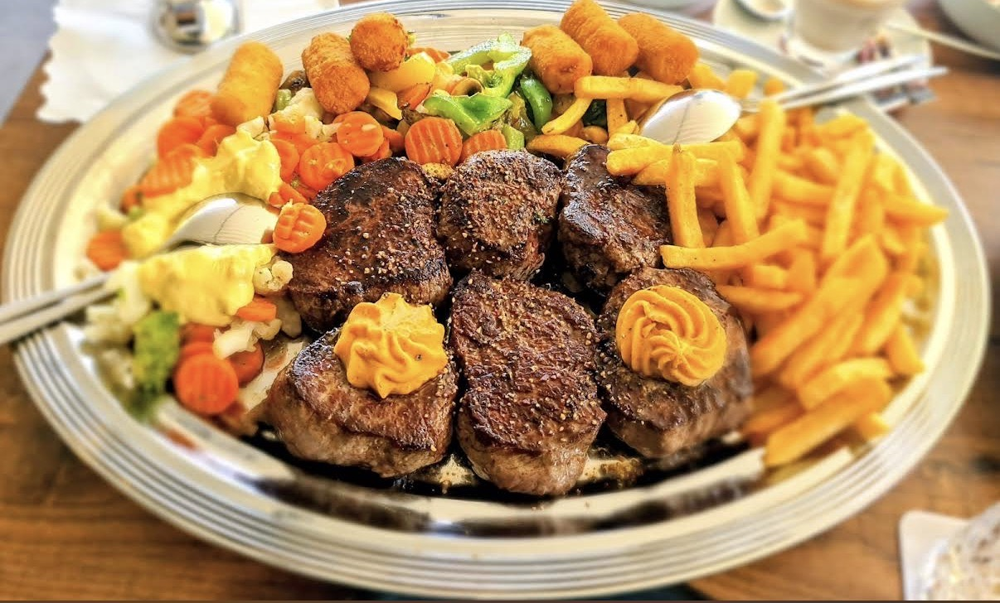
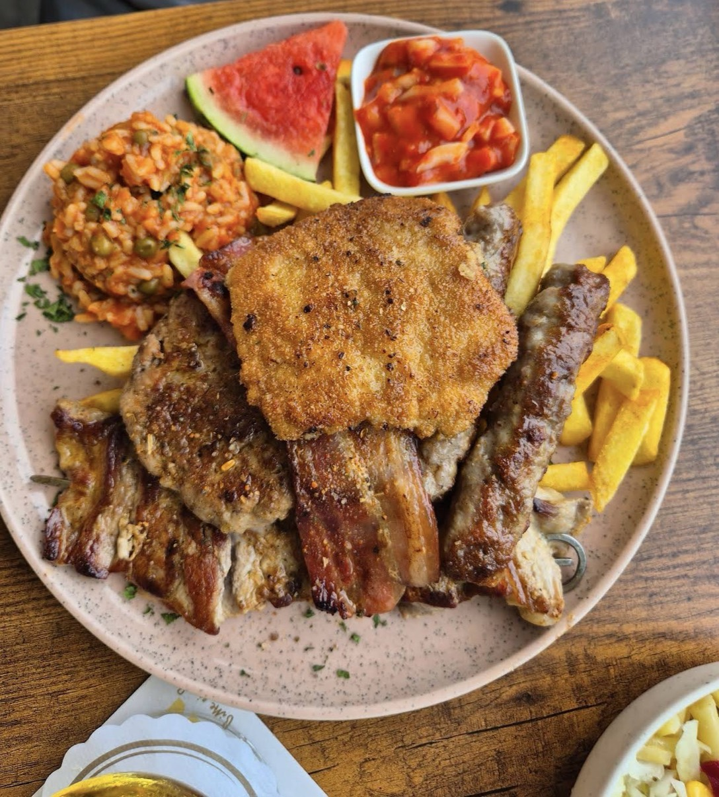
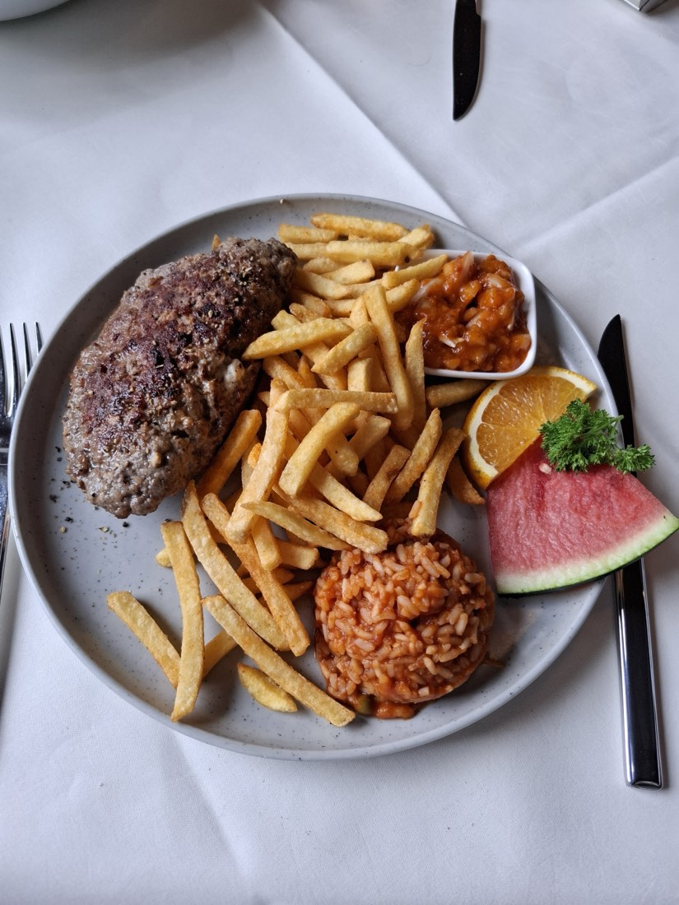

Die Platten für zwei
So reichlich, dass ein Kind mitisst. Medaillons mit Kräuterbutter, dazu Gemüse, Kroketten und Pommes.
Ahlen · Am Stadtwald
Landrestaurant und Café direkt am Langst-Teich: Terrasse über dem Wasser, Küche vom Grill, Salatbuffet dazu. Seit über einem Jahrzehnt in Familienhand.

Die Terrasse liegt direkt am Teich
Aus der Küche
Der Grill ist das Herz des Hauses: große Platten für zwei, Balkan-Spezialitäten und Steaks. Zum Hauptgang gehört das Salatbuffet.

So reichlich, dass ein Kind mitisst. Medaillons mit Kräuterbutter, dazu Gemüse, Kroketten und Pommes.

Ćevapčići, Bauchspeck, Schnitzel, dazu Djuvec-Reis und Ajvar. Die Küche, für die viele herkommen.

Auf den Punkt gegart, mit hausgemachten Soßen. Der Satz, der in den Bewertungen am häufigsten steht.
Salatbuffet inklusive: rund zehn Zutaten, drei Dressings, so oft Sie möchten. Dazu wechselnde Tagesgerichte.
Karte erfragen
Draußen sitzen
Überdacht und windgeschützt, mit Blick über das Wasser. An sonnigen Tagen gibt es genug Schattenplätze, und wenn das Wetter kippt, sitzen Sie trotzdem trocken.
Eindrücke




Was Gäste sagen
„Die Terrasse bietet auch an sonnigen Tagen genügend Schattenplätze mit tollem Ausblick. Das Essen schmeckt wirklich super, besonders die Grillgerichte.“
„Sehr gute Steaks gegessen. Auf den Punkt gegart. Sehr leckere Soßen. Preis-Leistung top.“
„Nach unserem ersten Besuch waren wir bereits ein zweites Mal dort, und auch dieses Mal war alles perfekt.“
Gut zu wissen
Öffnungszeiten
| Montag | 11:30 – 22:00 |
|---|---|
| Dienstag | Ruhetag |
| Mittwoch | 11:30 – 22:00 |
| Donnerstag | 11:30 – 22:00 |
| Freitag | 11:30 – 22:00 |
| Samstag | 11:30 – 22:00 |
| Sonntag | 11:30 – 21:00 |
Tisch sichern
Tische werden direkt am Telefon vergeben — ein Anruf genügt.
02382 8551018 Jetzt anrufenHerkommen